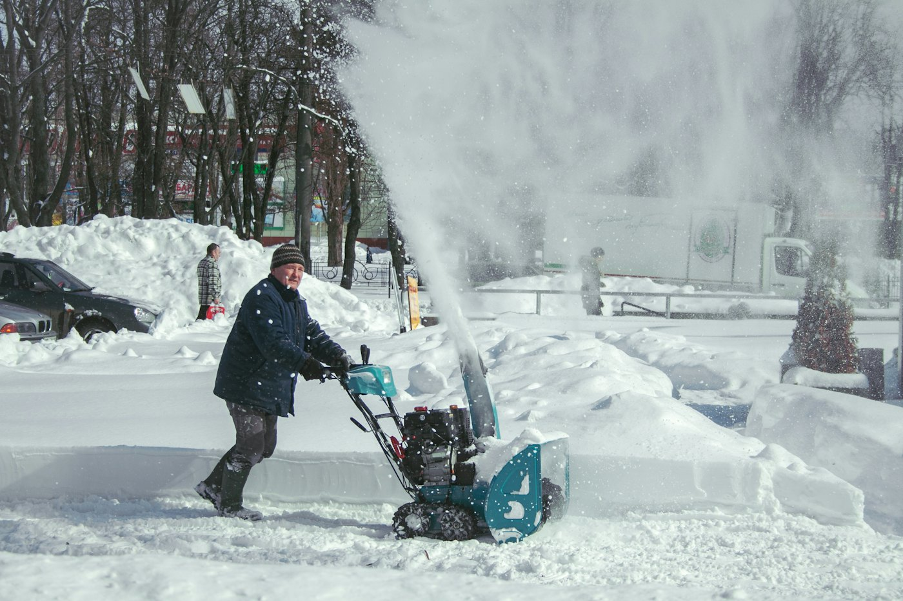

Winterdienst und Außenanlagen im Schwarzwald
Wir räumen und streuen Gehwege, Zufahrten und Parkplätze, dokumentieren jeden Einsatz und kümmern uns in der warmen Jahreszeit um Ihre Außenanlagen.
- Räumen und Streuen nach Satzung
- Jeder Einsatz mit Uhrzeit dokumentiert
- Außenpflege das ganze Jahr
- Kostenlose Besichtigung vor Ort

- Besichtigung kostenlos
- Antwort innerhalb von 24 Stunden
- Schriftliches Angebot mit Festpreis
- Deutsch, Türkçe, English
Warum sich ein Winterdienst im Schwarzwald lohnt
Im Schwarzwald kommt der Winter früh und bleibt lange. In Höhenlagen fällt der erste Schnee oft schon im Oktober oder November, und Glätte hält sich bis weit ins Frühjahr. Die Räum- und Streupflicht für Gehwege regelt jede Gemeinde in ihrer eigenen Satzung, einschließlich der Uhrzeiten, zu denen geräumt und gestreut sein muss.
Diese Pflicht können Sie per Vertrag auf einen Dienstleister übertragen. Wir beobachten die Wetterlage, rücken bei Schnee und Glätte aus, auch früh am Morgen, und räumen und streuen die vereinbarten Flächen. Jeden Einsatz halten wir mit Datum, Uhrzeit und Maßnahme in einem Streuprotokoll fest. So haben Sie einen Nachweis, falls es nach einem Sturz Fragen gibt.
Ob Wohnanlage in Freudenstadt, Kundenparkplatz in Villingen-Schwenningen oder Ferienhaus in Titisee-Neustadt: Wir legen Flächen, Zeiten und Abläufe vor dem ersten Schnee mit Ihnen fest. In der warmen Jahreszeit kümmern wir uns um Laub, Kehren, Unkraut auf Wegen und den Mülltonnenservice, sodass Ihre Außenanlagen das ganze Jahr gepflegt sind.
Unser Leistungsumfang
Öffentliche Gehwege
Gehwege vor Ihrem Grundstück räumen und streuen wir zu den Zeiten, die Ihre Gemeindesatzung vorgibt.
Zufahrten und Hofflächen
Garagenzufahrten, Hofeinfahrten und Wege zum Haus frei halten, damit Bewohner und Lieferanten sicher ankommen.
Parkplätze und Stellflächen
Kunden- und Mitarbeiterparkplätze räumen wir vor Geschäftsbeginn, bei Bedarf maschinell und in mehreren Durchgängen.
Eingänge und Treppen
Hauseingänge, Außentreppen, Rampen und Wege zu den Mülltonnen räumen und gegen Glätte sichern.
Passende Streumittel
Wir streuen Splitt, Granulat oder Salz, je nachdem, was Ihre Gemeinde für die jeweilige Fläche zulässt.
Streuprotokoll als Nachweis
Jeder Einsatz wird mit Datum, Uhrzeit, Fläche und Maßnahme dokumentiert und steht Ihnen auf Anfrage zur Verfügung.
Laub, Kehren, Unkraut
Im Frühjahr, Sommer und Herbst entfernen wir Laub, kehren Wege und Höfe und beseitigen Unkraut aus Pflasterfugen.
Mülltonnenservice und Müllplatz
Wir stellen die Tonnen am Abfuhrtag an die Straße, holen sie zurück und halten den Müllplatz sauber.
Für wen wir Winterdienst und Außenpflege übernehmen
- Hausverwaltungen und Eigentümergemeinschaften
- Vermieter und private Eigentümer
- Gewerbebetriebe mit Parkplätzen
- Arztpraxen und Einzelhandel
- Ferienwohnungen und Pensionen
- Industrie- und Gewerbehallen
So läuft es ab
Anfrage starten- 1
Begehung
Wir sehen uns die Flächen vor der Saison an und gleichen die Zeiten mit der Satzung Ihrer Gemeinde ab.
- 2
Vertrag
Im Vertrag legen wir Flächen, Zeiten, Streumittel und Abrechnung fest, als Saisonpauschale oder pro Einsatz.
- 3
Einsatz
Bei Schnee und Glätte rücken wir aus und räumen und streuen die vereinbarten Flächen in fester Reihenfolge.
- 4
Streuprotokoll
Jeder Einsatz wird mit Datum und Uhrzeit protokolliert, und Sie können das Protokoll jederzeit anfordern.
Was kostet ein Winterdienst?
Der Preis hängt von Flächen, Lage und Vertragsmodell ab. Nach der Besichtigung erhalten Sie ein schriftliches Angebot, als Saisonpauschale oder mit Abrechnung pro Einsatz.
Wenn Sie Winterdienst und Außenpflege im Sommer kombinieren, erhalten Sie beides in einem Ganzjahresangebot.
Festpreis anfragen- Flächen und Wege
- Länge der Gehwege, Größe der Parkplätze und Zahl der Treppen bestimmen den Aufwand pro Einsatz.
- Höhenlage und Schneemenge
- In Höhenlagen sind Einsätze häufiger und länger als im Rheintal, das fließt in die Kalkulation ein.
- Zeiten und Häufigkeit
- Frühe Räumzeiten, Einsätze am Wochenende und mehrere Durchgänge bei Dauerschneefall erhöhen den Aufwand.
- Pauschale oder Einzelabrechnung
- Eine Saisonpauschale schafft feste Kosten, die Abrechnung pro Einsatz richtet sich nach dem tatsächlichen Winter.
Im ganzen Schwarzwald für Sie da
Wir übernehmen Winterdienst und Außenpflege im Schwarzwald, unter anderem in Freudenstadt, Villingen-Schwenningen, Titisee-Neustadt, Hinterzarten, Triberg, Donaueschingen und Waldkirch.
Häufige Fragen
Kann ich die Räum- und Streupflicht an Sie übertragen?
Ja. Die Räum- und Streupflicht lässt sich per Vertrag auf einen Dienstleister übertragen. Im Vertrag legen wir genau fest, welche Flächen wir zu welchen Zeiten räumen und streuen.
Zu welchen Uhrzeiten muss geräumt sein?
Das legt die Satzung Ihrer Gemeinde fest, und die Zeiten unterscheiden sich von Ort zu Ort. Wir richten unsere Einsätze nach der Satzung, die für Ihr Grundstück gilt.
Wie dokumentieren Sie die Einsätze?
Jeder Einsatz kommt mit Datum, Uhrzeit, Fläche und Maßnahme in ein Streuprotokoll. Damit haben Sie einen Nachweis, falls es nach einem Sturz Fragen gibt.
Was passiert bei Dauerschneefall?
Bei anhaltendem Schneefall oder erneuter Glätte kommen wir mehrmals am Tag, so wie es im Vertrag vereinbart ist. Auch jeder weitere Einsatz steht im Streuprotokoll.
Wann sollte ich den Winterdienst beauftragen?
Am besten im Spätsommer oder frühen Herbst. Dann bleibt Zeit für die Begehung, und Ihre Flächen sind eingeplant, bevor in den Höhenlagen der erste Schnee fällt.
Was übernehmen Sie außerhalb des Winters?
Wir entfernen Laub, kehren Wege und Höfe, beseitigen Unkraut auf Wegen und Pflaster und übernehmen den Mülltonnenservice. So haben Sie für Ihre Außenanlagen das ganze Jahr einen festen Ansprechpartner.
Passende Leistungen

Treppenhausreinigung
Wir reinigen Treppenhäuser und Gemeinschaftsflächen in Mehrfamilienhäusern im festen Turnus, damit sich Mieter, Eigentümer und Hausverwaltung nicht mehr um die Kehrwoche kümmern müssen.
Mehr erfahren
Industrie- und Hallenreinigung
Wir reinigen Produktionshallen, Lager, Werkstätten und Maschinen mit Industrietechnik und richten uns dabei nach Ihren Schichtzeiten und Sicherheitsregeln.
Mehr erfahrenUnterhaltsreinigung
Wir halten Büros, Praxen, Kanzleien und Ladenflächen dauerhaft sauber, nach einem festen Reinigungsplan und zu Zeiten, in denen Ihr Betrieb nicht gestört wird.
Mehr erfahrenSagen Sie uns, was sauber werden soll.
Beschreiben Sie kurz Objekt und Leistung. Wir melden uns innerhalb von 24 Stunden mit einem Terminvorschlag.
- Telefon und WhatsApp
- +49 162 9763733
- Erreichbar
- Montag bis Samstag, 7 bis 19 Uhr
- Einsatzgebiet
- Schwarzwald und Umgebung